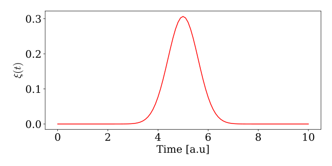

Theoretical Background
In this section, we go over the necessary theory to work with continuous fockstates in the WaveguideQED.jl
Continuous Fock States
The single photon continuous fock state can be defined as:
\[\begin{equation*} \ket{\psi} = W^\dagger(\xi) \ket{0} = \int_{t_0}^{t_{end}} \mathrm{d}t \ \xi(t) w^\dagger(t) \ket{\emptyset} \end{equation*}\]
here $W^\dagger(\xi)$ creates a photon with the wavefunction $\xi(t)$. $w^\dagger(t)$ is the creation operator for a photon at time $t$, and it obeys the commutation relation: $\left[w(t),w(t')\right ] = \delta(t-t')$. The probability of observing a photon at time $t$ is given by: $\bra{\psi} w^\dagger(t) w(t) \ket{\psi} = |\xi^{(1)}(t)|^2$. The interpretation of the wavefunction $\xi^{(1)}(t)$. The wavefunction $\xi(t)$ thus describes the temporal distribution of the photon.
The heart of the photon time-binning is discretizing the continuous fock state into time-bins of width $\Delta t$. The interaction with the emitter/cavity is then assumed to span only one time-bin at a time, corresponding to a spectrally flat interaction between the waveguide and emitter/cavity. We thus discretize the annihilation and creation operators by taking[1]:
\[\begin{equation*} w(t_k) = w(k \Delta t) \rightarrow \frac{w_k}{\sqrt{\Delta t}} \ \ \ \text{with} \ \left[ w_j, w_k^\dagger \right ] = \delta_{jk} \end{equation*}\]
where $w_k$ is the descritized operator and the factor of $1/\sqrt{\Delta t}$ assures the commutator relation in the limit of $\Delta t \rightarrow 0$. We denote the action of the discretized creation operator as: $w_k^\dagger \ket{\emptyset} = \ket{1_k}$ meaning a single photon in time-bin $k$. This means that the single photon continuous fock state becomes:
\[\begin{equation*} \ket{\psi} = \int_{t_0}^{t_{end}} \mathrm{d}t \ \xi(t) w^\dagger(t) \ket{\emptyset} \rightarrow \sum_{k=1}^N \sqrt{\Delta t} \xi(t_k) w_k^\dagger \ket{\emptyset} \end{equation*}\]
In WaveguideQED.jl, the time-bins above are represented as elements in arrays corresponding to each time-bin:

Let`s say you want to represent a single photon continuous fock state that starts at $t=0$ and ends at $t=10$ with $\Delta t = 0.1$. This can be done by creating a waveguide basis defined on such a time interval:a
using WaveguideQED
times = 0:0.1:10
bw = WaveguideBasis(1,times)Notice that the input for WaveguideBasis is 1 and times. 1 denotes the maximum excitation number of fockstates (currently can only be 1 or 2), and times the is the time interval over which the continuous fockstate is defined. To define the continuous fockstate, we need to define a wavefunction $\xi$. In the following, we define a Gaussian wavefunction located around $t=5$ with a width of $\sigma = 1$:
ξ(t,σ,t0) = sqrt(2/σ)* (log(2)/pi)^(1/4)*exp(-2*log(2)*(t-t0)^2/σ^2)
σ,t0 = 1,5
ψ = onephoton(bw,ξ,σ,t0)This state can be visualized by:
using PyPlot
viewed_state = OnePhotonView(ψ)
fig,ax = subplots(1,1,figsize=(9,4.5))
ax.plot(times,real.(viewed_state),"r-")
ax.set_xlabel("Time [a.u]")
ax.set_ylabel(L"$\xi(t)$")
The time-binned creation and annihilation operators are easily created from the basis:
w = destroy(bw)
wd = create(bw)The time-bin that the operator acts on is set by either:
w.timeindex = 10
wd.timeindex = 10or:
set_waveguidetimeindex!(w,10)
set_waveguidetimeindex!(wd,10)The effect of the creation operator is to create a photon in timebin k and can be illustrated as:

This is also seen if we plot the creation operator acting on the vacuum:
ψ = wd*zerophoton(bw)
viewed_state = OnePhotonView(ψ)
fig,ax = subplots(1,1,figsize=(9,4.5))
ax.plot(times,real.(viewed_state),"r-");
ax.set_xlabel("Time [a.u]")
ax.set_ylabel(L"$\xi(t)$")
plt.tight_layout()We see a spike around t = times[10] = 0.9, where we now created an excitation. In itself, the waveguide basis, states, and operators are not particularly interesting, but when combined with other quantum mechanical systems such as cavities and emitters, the framework can produce powerful results. See Combining with QuantumOptics for an introduction on how to combine with quantum systems defined in 'QuantumOptics.jl'.
Continuous two-photon fock states
So far, we have considered only one excitation in the waveguide. We can extend the definition of a one-photon continuous fock state to a two-photon state as[2]:
\[\begin{align*} \frac{1}{\sqrt{2}}\left[W^\dagger(\xi)\right]^2|0\rangle &= \frac{1}{\sqrt{2}} \int_{t_0}^{t_{end}} d t^{\prime} \int_{t_0}^{t_{end}} d t \ \xi(t) \xi\left(t^{\prime}\right) w^\dagger(t) w^\dagger\left(t^{\prime}\right)|0\rangle \\ &= \frac{1}{\sqrt{2}} \int_{t_0}^{t_{end}} d t^{\prime} \int_{t_0}^{t_{end}} d t \ \xi^{(2)}(t,t') w^\dagger(t) w^\dagger\left(t^{\prime}\right)|0\rangle \end{align*}\]
Here, we here defined the two photon wavefunction $\xi^{(2)}(t,t') = \xi(t) \xi\left(t^{\prime}\right)$. The state is now defined over two times, which describes the probability of observing photon A at time $t$ and photon B at time $t'$. In this case, the state is a product state $\xi^{(2)}(t,t') = \xi(t) \xi\left(t^{\prime}\right)$, and both probabilities are described by the (same) single photon wavefunction $\xi(t)$, but one could have entangled states across time. This means a non-seperable wavefunction $\xi^{(2)}(t,t') \neq \xi_1(t)\xi_2(t')$. For now, we will consider a symmetric and separable state.
The time-binning is in a similar fashion defined as:
\[\begin{align*} \frac{1}{\sqrt{2}}\left[W^\dagger(\xi)\right]^2|0\rangle &= \frac{1}{\sqrt{2}} \int_{t_0}^{t_{end}} d t^{\prime} \int_{t_0}^{t_{end}} d t \ \xi(t) \xi\left(t^{\prime}\right) w^\dagger(t) w^\dagger\left(t^{\prime}\right)|0\rangle \\ & \rightarrow \frac{1}{\sqrt{2}} \sum_{i=1}^N \sum_{k=1}^N \xi\left(t_i\right) \xi\left(t_k\right) w^\dagger\left(t_i\right) w^{\dagger}\left(t_k\right)|0\rangle \\ & =\frac{1}{\sqrt{2}} \sum_{i=1}^N \sum_{k \neq i}^N \xi\left(t_i\right) \xi\left(t_k\right) w^{\dagger}\left(t_i\right) w^{\dagger}\left(t_k\right)|0\rangle+\sum_{i=1}^N \xi\left(t_i\right) \xi\left(t_i\right)\left|2 t_i\right\rangle \\ & =\frac{1}{\sqrt{2}} \sum_{i=1}^N \sum_{k>i}^N (\xi\left(t_i\right) \xi\left(t_k\right) + \xi\left(t_k\right) \xi\left(t_i\right)) \left|1_{t_i} 1_{t_k}\right\rangle+\sum_{i=1}^N \xi\left(t_i\right) \xi\left(t_i\right)\left|2 t_i\right\rangle \end{align*}\]
The sum is allowed to run over only half of the times due to the symmetry of the photons (it's equivalent to having one photon at time-bin k and then one photon at time-bin j or one photon at time-bin j and then one photon at time-bin k). This is how the two-photon state is saved in the underlying arrays and can be illustrated as:

Creating then is:

We can define a two-photon basis and corresponding operator by:
bw = WaveguideBasis(2,times)
w = destroy(bw)
wd = create(bw)The creation operator can then be visualized by acting on onephoton filled with ones. This is seen in the following. Note that the state is visualized as a contour plot mirrored around the diagonal.
set_waveguidetimeindex!(wd,50)
psi_plot = wd*onephoton(bw,x->1)
fig,ax = subplots(1,1,figsize=(4.5,4.5))
plot_twophoton!(ax,psi_plot,times)If we want to create a two-photon Gaussian state, we instead do:
ξ(t,σ,t0) = sqrt(2/σ)* (log(2)/pi)^(1/4)*exp(-2*log(2)*(t-t0)^2/σ^2)
ξ2(t1,t2,σ,t0) = ξ(t1,σ,t0)*ξ(t2,σ,t0)
σ,t0 = 1,5
ψ = twophoton(bw,ξ2,σ,t0) / sqrt(2)Here, we defined the two-photon equivalent of our single-photon Gaussian state. Note the factor of $\sqrt{2}$ that is necessary for the state to be normalized. Alternatively, twophoton(bw,ξ2,σ,t0;norm=true) would return a normalized state. When we visualize it, we now need two times, and we make a contour plot. This is easily done by viewing the two-photon state and using plot_twophoton!:
viewed_state = TwoPhotonView(ψ)
fig,ax = subplots(1,1,figsize=(4.5,4.5))
plot_twophoton!(ax,viewed_state,times)
ax.set_ylabel("time [1/γ]")
ax.set_xlabel("time [1/γ]")
plt.tight_layout()